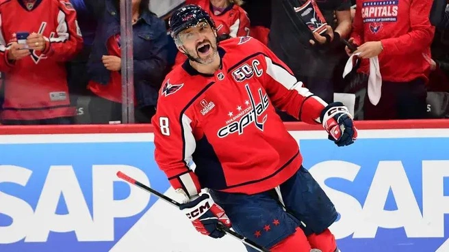
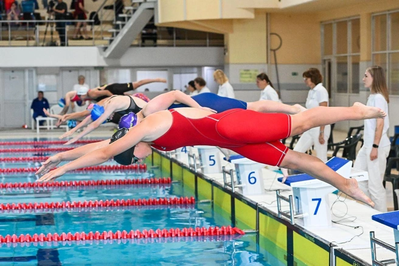
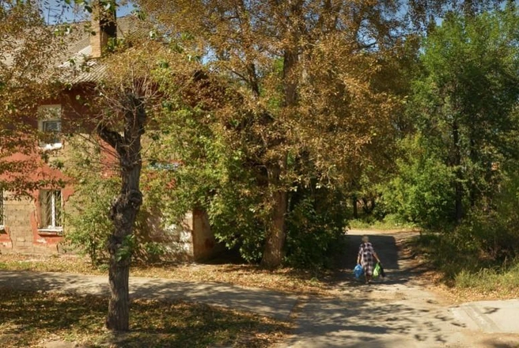

Новости спорта
У Овечкина и Малкина завершаются контракты: анонс нового сезона НХЛ
Евгений Малкин и Александр Овечкин стали настоящими символами НХЛ в XXI веке. В лиге они играют с 2004 года. Тогда «Вашингтон» под первым номером драфта взял Овечкина, «Питтсбург» следом выбрал Малкина. С тех пор россияне выступают за свои команды. На двоих они выиграли четыре Кубка Стэнли (три у Малкина, один — у Овечкина).

Плавание сохранит статус базового вида спорта в Пермском крае
Приказом Министерства спорта РФ плавание продолжит находиться в перечне базовых видов спорта Пермского края с 2026 по 2030 год. АО «ОХК „Уралхим“» в рамках благотворительной программы «Уралхим» — спорту» поддерживает развитие плавания в регионе.

Новости Перми
До Прикамья добрался первый снег, такая погода и будет дальше? Андрей Шихов дал прогноз на неделю

В Балатово планируют масштабную реновацию: снесут больше 60 старых домов, чтобы построить новые
В Балатово планируют масштабное обновление. По договору о комплексном развитии территории (КРТ) хотят снести больше 60 старых зданий, чтобы построить многоэтажки высотой до 16 этажей.
